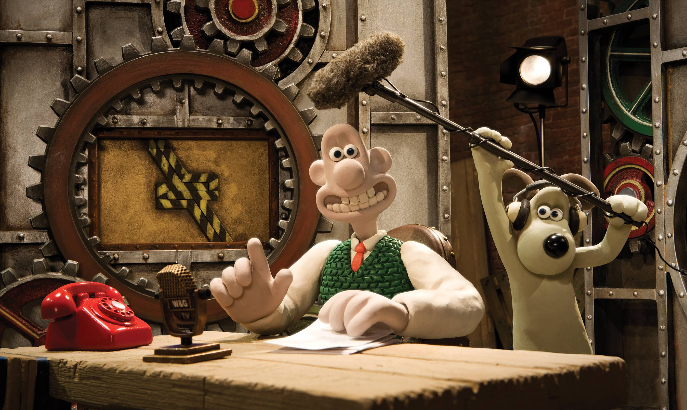

About Wallace
Wallace is a cheese-loving inventor from the North of England. His best friend is Gromit, his dog, who he goes on adventures with.
Wallace & Gromit in their basement for inventing
Inventions
- The wrong trousers
- Rocket ship
- Were-Rabbit suction machine
Wallace and Gromit Films
Wallace and Gromit have starred in four films, click on the links below to find out more: